Chapter 7: The Bebop Scales
Figure 7-1

Figure 7-2

Figure 7-3

Figure 7-4

The Bebop Dominant Scale
Figure 7-5

The Bebop Dorian Scale
Figure 7-6

Figure 7-7

The Bebop Major Scale
Figure 7-8

The Bebop Melodic Minor Scale
Figure 7-9

Bebop Scale Licks
Figure 7-10
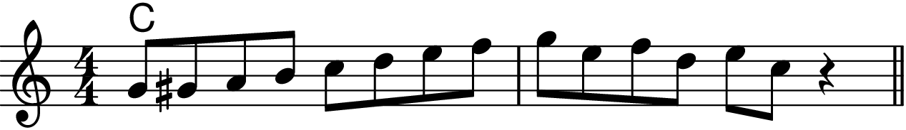
Figure 7-11
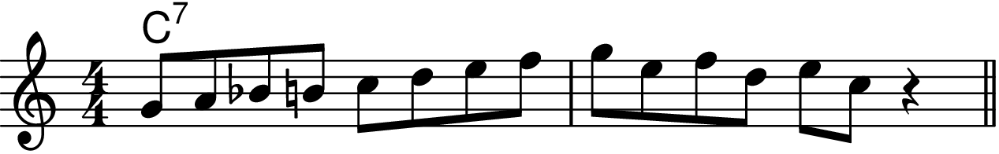
Figure 7-12
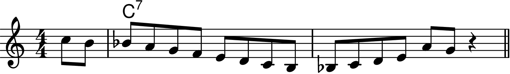
Figure 7-13
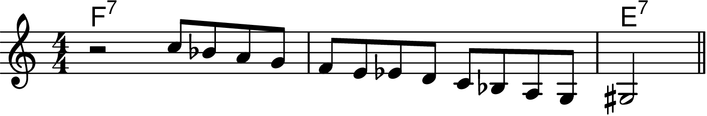
Figure 7-14
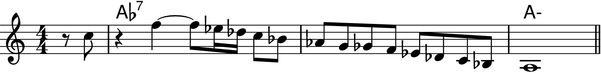
Figure 7-15

Figure 7-16
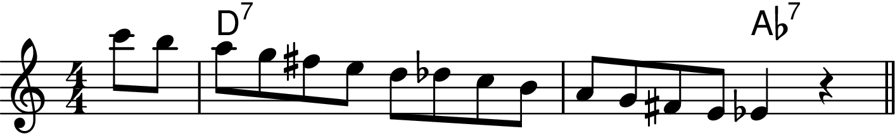
Figure 7-17
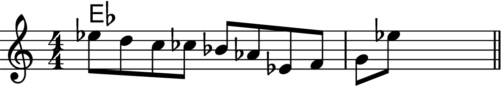
Figure 7-18
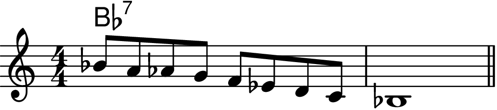
Figure 7-19a
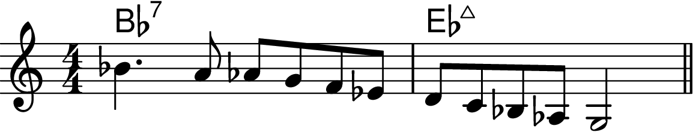
Figure 7-19b
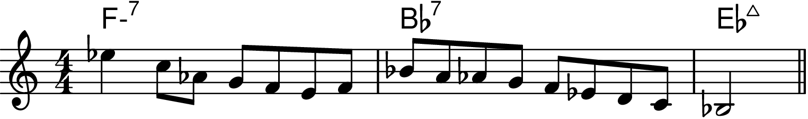
Figure 7-19c
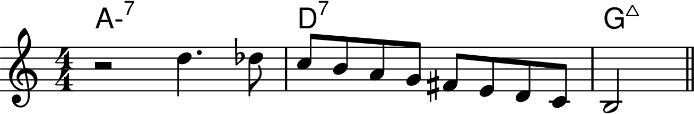
Figure 7-20
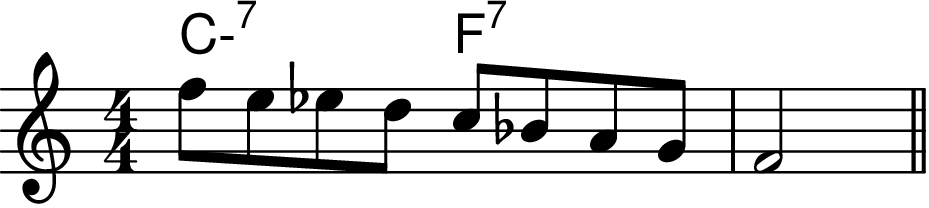
Piano and Arranging Stuff
Figure 7-21
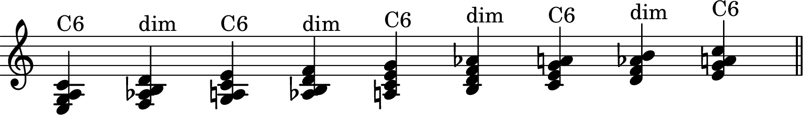
Figure 7-22
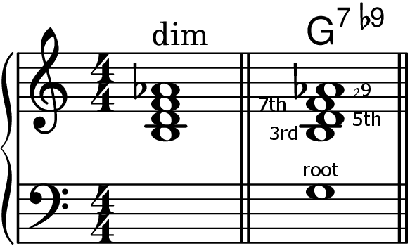
Figure 7-23
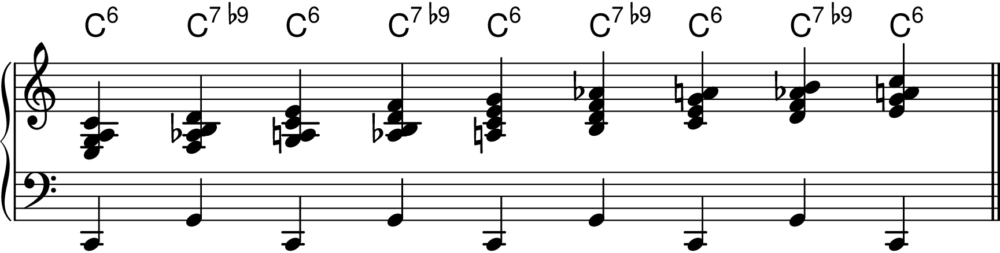
Figure 7-24
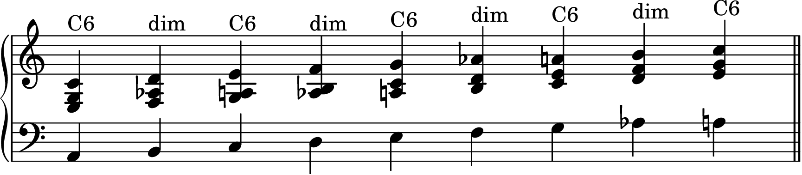
Figure 7-25
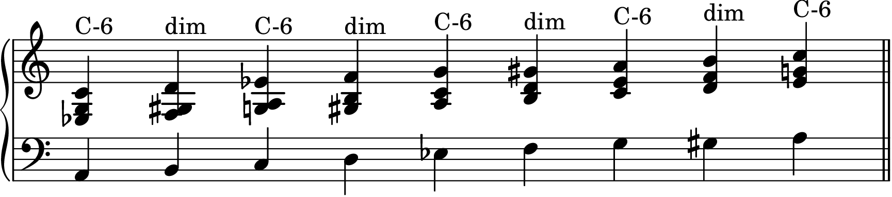
Figure 7-26

Figure 7-27
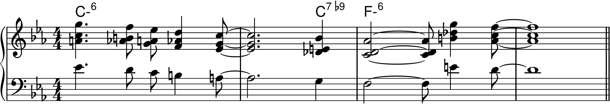